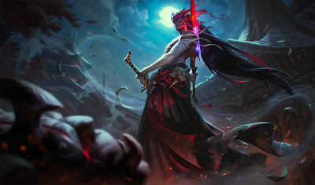

Yone

In life, he was Yone—half-brother of Yasuo, and renowned student of his village's sword school.
But upon his death at the hands of his brother, he found himself hunted by a malevolent entity of the spirit realm, and was forced to slay it with its own sword. Now, cursed to wear its demonic mask upon his face, Yone tirelessly hunts all such creatures in order to understand what he has become.
Abilities
-
Passive
- Way of the Hunter -Yone deals magic damage with every second Attack. In addition, his critical strike chance is increased.
-
Q
- Mortal Steel -Thrusts forward, damaging all enemies in a line. On hit, grants a stack of Gathering Storm for a few seconds. At 2 stacks, Mortal Steel dashes Yone forward with a gust of wind knocking enemies Airborne. Mortal Steel is treated as a basic attack and scales with all the same things.
-
W
- Spirit Cleave -Cleaves forward, damaging all enemies in a cone. Grants a shield to Yone, the value is increased by the number of champions hit by the swipe. Spirit Cleave's cooldown and cast time scale with attack speed.
-
E
- Sould Unbound -Yone's spirit leaves his body behind, gaining Move Speed. When this skill ends, Yone's spirit is forced back to his body and he repeats a portion of the damage he dealt as a spirit.
-
R
- Fate Sealed -Yone blinks behind the last champion in a line with a slash so powerful it pulls all enemies hit towards him.
Next champion
Return to Main Page
Return to top